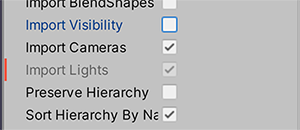

预设
预设是可用于将相同属性设置跨多个组件、资源或项目设置窗口保存和应用的资源。您还可以使用预设在预设管理器中指定新组件的默认设置和资源的默认导入设置。 预设管理器支持您添加到 Unity 编辑器的任何导入器、组件或脚本化对象。
You can only apply Presets in the Editor. Presets have no effect at runtime. You can use scripting to support presets in your own Monobehaviour, ScriptableObject or ScriptedImporter classes.
保存和应用预设
预设允许您将组件、资源或 Project Settings 窗口的属性配置保存为预设资源。然后，您可以使用此预设资源将相同的设置应用到不同的组件、资源或 Project Settings 窗口。
例如，您可以编辑刚体组件的属性，将这些设置保存到一个预设资源，然后将该预设资源应用到其他游戏对象中的刚体组件。游戏对象中的其他组件不受影响；预设仅将其设置应用于刚体组件。
可将预设存储在项目的 Assets 文件夹中。使用 Project 窗口可查看并选择要在 Inspector 中编辑的预设。

将属性设置保存到预设
要将属性设置保存到预设资源，请按照以下说明进行操作。您可以在编辑模式或运行模式下保存属性设置。
1.选择要重用设置的游戏对象、资源导入设置或 Project Settings 窗口。选择后会出现在 Inspector 窗口。
2.在 Inspector 窗口中，根据需要配置属性以保存它们。
3.单击 Inspector 窗口右上角的预设选择器（滑动条图标）。 4.在 Select Preset 窗口中，单击 Save current to。
4.在 Select Preset 窗口中，单击 Save current to。
显示一个 File Save 对话框。
5.选择新预设的位置，输入其名称，然后单击 Save。
应用预设中的设置
有两种方法可以应用预设：__Select Preset__ 窗口，或对于组件预设，您还可以将预设从 Project 窗口拖放到包含该组件的游戏对象上。
注意：应用预设会将属性从预设复制到该项。此过程不会将预设链接到该项。对预设所做的更改不会影响先前已应用预设的项。
通过 Select Preset 窗口应用预设：
1.对于您想要应用预设的游戏对象或资源，选择它们使其出现在 Inspector 窗口中。对于要应用预设的项目设置，请在 Project Settings 窗口中将其打开。
2.在 Inspector 中，单击预设选择器（滑动条图标）。
3.在 Select Preset 窗口中，搜索并选择要应用的预设。
Unity 将此预设应用到组件、资源或 Project Settings 窗口。
4.关闭 Select Preset 窗口。
如果您通过拖放操作应用组件预设，Unity 的行为取决于您的游戏对象的状态：
- 如果您将预设放在 Hierarchy 窗口中的现有游戏对象上，Unity 会添加一个新组件并从预设中复制属性。
- 如果您将预设放在 Hierarchy 窗口中的空白区域上，Unity 会创建一个新的空游戏对象，并添加一个具有复制自预设的属性的组件。
- 如果您将 Inspector 窗口上的预设拖放到现有组件的标题上，Unity 将从该预设复制属性。
- 如果您将预设拖放到 Inspector 窗口中的空白区域上，Unity 会添加一个新组件并从预设中复制属性。
应用部分预设
您可以选择仅应用预设中的某些属性并排除其他属性。为此需要执行以下操作：
1.在 Project 窗口中选择您的预设。
2.在 Inspector 中, 右键单击一个属性并选择 Exclude Property。该窗口在排除的属性旁边显示一条红色水平线。

3.将该预设应用到目标组件、资源或项目设置。
注意：__要全选或清除预设中的所有复选框，请选择 More items__ 菜单 (⋮) 或右键单击预设名称，然后选择 Include all properties 或 Exclude all properties。如果需要，您仍然可以调整各个属性。
您还可以对预设使用排除选项，然后将其设置为组件和资源导入器的默认配置。有关如何执行此操作的更多详细信息，请参阅预设管理器。
编辑预设
要编辑预设资源，请从 Project 窗口进行选择，然后在 Inspector 窗口中查看。
注意：当您更改预设中的属性时，您的更改不会影响您已应用该预设的项目。例如，如果将刚体组件的预设应用于游戏对象，然后编辑该预设，则刚体组件中的设置不会更改。

按文件夹使用预设来导入资源
您可以在 Project 窗口中使用脚本根据资源的位置将预设应用于该资源。
导出预设资源
预设可用于简化团队的工作流程。甚至可以使用预设来指定 Project Settings 窗口（包括 Preset 设置本身）的设置。可使用此功能配置某个项目，然后将其导出作为自定义资源包。团队成员可将此资源包导入其项目中。
1.在 Project 窗口中，选择要导出的预设。
2.在 Unity 菜单中，转到 Assets > Export Package__，或在 Project 窗口内右键单击并选择 Export Package。
Exporting package__ 窗口显示要导出的项目。
3.如果您的预设包含对要包含在包中的资源的引用，请启用 Include dependencies。
4.单击 Export。
5.选择要存储包的位置，输入文件名，然后单击 Save。Unity 将包保存为 .unitypackage 文件。
对动画状态节点的过渡使用预设
可保存和应用动画状态节点的预设。但是，预设中的过渡将在预设以及应用预设的节点之间共享。例如，可将预设应用于 Animator 窗口中的两个不同节点。在 Inspector 窗口中，编辑第一个节点中某个过渡的设置。所做的更改也会显示在另一个节点中和预设中。
2017–03–27页面已发布
新功能，添加于 2018.1 NewIn20181